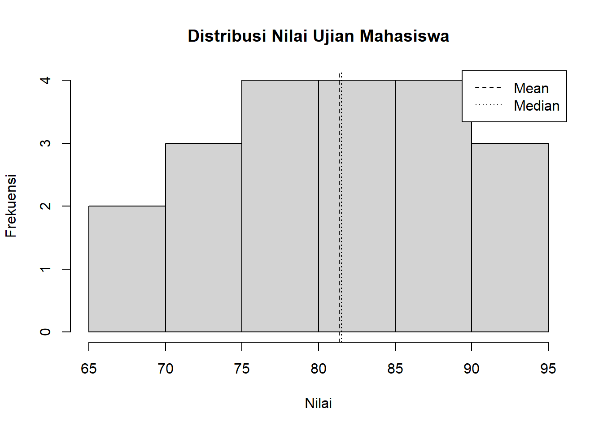
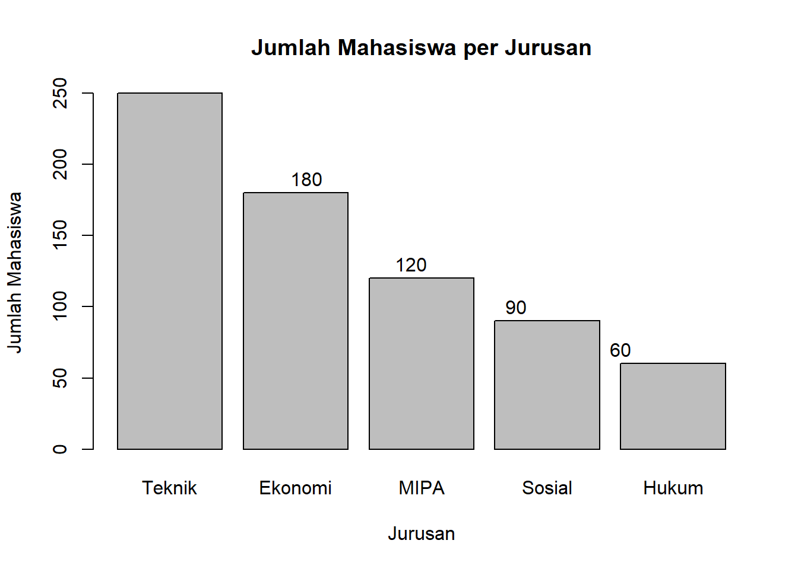
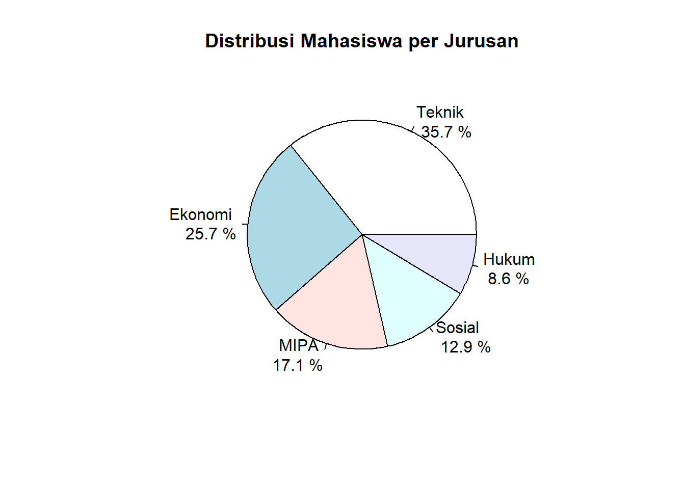

Statistika deskriptif adalah cabang statistika yang berfokus pada peringkasan, penyajian, dan interpretasi data tanpa membuat generalisasi ke populasi yang lebih besar.
2.1 Ukuran Pemusatan (Measures of Central Tendency)
Definisi Intuitif:
Ukuran pemusatan menunjukkan “nilai tipikal” atau “nilai representatif” yang menggambarkan di mana data cenderung berkumpul atau terpusat. Bayangkan seperti mencari titik keseimbangan dari sekumpulan data.
2.1.1 1. Mean (Rata-rata)
Definisi Intuitif:
Mean adalah titik keseimbangan matematis dari semua data. Jika kita bayangkan data sebagai beban di atas papan timbangan, mean adalah titik dimana papan akan seimbang sempurna.
Median adalah nilai tengah yang membagi data menjadi dua kelompok sama besar. Bayangkan mengurutkan semua orang berdasarkan tinggi badan, median adalah tinggi orang yang berada tepat di tengah barisan.
Definisi Formal:
Nilai tengah yang membagi data menjadi dua bagian sama besar setelah diurutkan.
Modus adalah nilai yang paling “populer” atau paling sering muncul dalam data. Seperti mencari jawaban yang paling banyak dipilih dalam survei atau warna baju yang paling banyak dipakai di kelas.
Definisi Formal:
Nilai yang paling sering muncul dalam data.
2.1.3.1Formula untuk Data Berkelompok
\[Mo = L + \left(\frac{d_1}{d_1 + d_2}\right) \times h\]
dimana:
\(L\) = batas bawah kelas modus
\(d_1\) = selisih frekuensi kelas modus dengan kelas sebelumnya
\(d_2\) = selisih frekuensi kelas modus dengan kelas sesudahnya
Ukuran penyebaran menunjukkan seberapa “tersebar” atau “bervariasi” data dari pusat distribusi. Bayangkan dua kelas dengan nilai rata-rata sama (80), tetapi:
Kelas A: nilai berkisar 78-82 (data mengumpul di sekitar mean)
Kelas B: nilai berkisar 60-100 (data tersebar jauh dari mean)
Kelas B memiliki penyebaran yang lebih besar meski mean-nya sama.
2.2.1 1. Range (Jangkauan)
Definisi Intuitif:
Range menunjukkan rentang keseluruhan data, dari nilai terkecil hingga terbesar. Seperti selisih antara suhu tertinggi dan terendah dalam sehari.
Formula:
\[R = x_{max} - x_{min}\]
Contoh:
Data 68, 75, 82, 85, 90
\[R = 90 - 68 = 22\]
2.2.2 2. Varians
Definisi Intuitif:
Varians mengukur rata-rata kuadrat jarak setiap data dari mean. Semakin besar varians, semakin tersebar data dari pusatnya. Seperti mengukur seberapa jauh rata-rata rumah-rumah dari pusat kota.
Definisi Formal:
Rata-rata kuadrat selisih setiap nilai dengan mean.
Simpangan baku adalah akar kuadrat varians yang memberikan ukuran penyebaran dalam satuan yang sama dengan data asli. Lebih mudah diinterpretasi karena satuannya sama dengan data.
Koefisien variasi mengukur variabilitas relatif terhadap mean, berguna untuk membandingkan variabilitas antar dataset dengan skala berbeda. Seperti membandingkan variabilitas gaji (dalam jutaan) dengan variabilitas umur (dalam tahun).
Formula:
\[CV = \frac{s}{\bar{x}} \times 100\%\]
Contoh:
\[CV = \frac{8.63}{80} \times 100\% = 10.79\%\]
2.3 Visualisasi Data dengan R
2.3.1 1. Tabel Distribusi Frekuensi
Definisi:
Tabel yang menunjukkan berapa kali setiap nilai atau kelompok nilai muncul dalam dataset.
Kegunaan:
Melihat pola distribusi data secara numerik
Identifikasi nilai yang paling sering/jarang muncul
Dasar untuk membuat histogram dan visualisasi lainnya
Interpretasi:
Frekuensi tinggi menunjukkan nilai yang umum, frekuensi rendah menunjukkan nilai yang jarang.
# Tabel frekuensi dengan proporsiprop.table(tabel_frekuensi)
nilai_grade
E D C B A
0.00 0.10 0.35 0.40 0.15
2.3.2 2. Histogram
Definisi:
Grafik yang menunjukkan distribusi data kontinu dengan membagi data ke dalam interval (bins) dan menampilkan frekuensi setiap interval sebagai batang.
Kegunaan:
Melihat bentuk distribusi data (simetris, miring kiri/kanan)
Identifikasi outlier dan pola dalam data
Estimasi visual mean, median, dan modus
Interpretasi:
Tinggi batang = frekuensi data dalam interval tersebut
Bentuk kurva = karakteristik distribusi (normal, skewed, bimodal)
# Histogram sederhanahist(nilai, main ="Distribusi Nilai Ujian Mahasiswa", xlab ="Nilai", ylab ="Frekuensi", breaks =8)# Menambahkan garis mean dan medianabline(v =mean(nilai), lty =2)abline(v =median(nilai), lty =3)legend("topright", legend =c("Mean", "Median"), lty =c(2, 3))

2.3.3 3. Diagram Batang (Bar Chart)
Definisi:
Grafik yang menampilkan data kategorik menggunakan batang dengan tinggi proporsional terhadap nilai/frekuensi kategori.
Kegunaan:
Membandingkan frekuensi atau nilai antar kategori
Menampilkan ranking atau urutan kategori
Visualisasi data nominal dan ordinal
Interpretasi:
Tinggi batang = nilai/frekuensi kategori
Perbandingan tinggi = perbandingan antar kategori
# Data kategorikjurusan<-c("Teknik", "Ekonomi", "MIPA", "Sosial", "Hukum")jumlah_mahasiswa<-c(250, 180, 120, 90, 60)# Bar chart sederhanabarplot(jumlah_mahasiswa, names.arg =jurusan, main ="Jumlah Mahasiswa per Jurusan", xlab ="Jurusan", ylab ="Jumlah Mahasiswa")# Menambahkan nilai di atas batangtext(x =seq_along(jumlah_mahasiswa), y =jumlah_mahasiswa+10, labels =jumlah_mahasiswa)

2.3.4 4. Diagram Lingkaran (Pie Chart)
Definisi:
Grafik berbentuk lingkaran yang menunjukkan proporsi setiap kategori terhadap keseluruhan data.
Kegunaan:
Menampilkan komposisi atau proporsi data kategorik
Melihat kontribusi relatif setiap kategori
Efektif untuk data dengan kategori tidak terlalu banyak (≤7)
Interpretasi:
Ukuran potongan = proporsi kategori terhadap total
Total semua potongan = 100% dari data
# Pie chart sederhanapie(jumlah_mahasiswa, labels =paste(jurusan, "\n", round(jumlah_mahasiswa/sum(jumlah_mahasiswa)*100, 1), "%"), main ="Distribusi Mahasiswa per Jurusan")

2.3.5 5. Box Plot (Diagram Kotak)
Definisi:
Grafik yang menampilkan ringkasan lima angka (minimum, Q1, median, Q3, maksimum) dan outlier dalam bentuk kotak dan garis.
Kegunaan:
Identifikasi outlier dengan mudah
Membandingkan distribusi antar kelompok
Melihat simetri dan skewness distribusi
Interpretasi:
Garis tengah kotak = median
Kotak = rentang interkuartil (IQR = Q3-Q1)
Whiskers = rentang data normal (bukan outlier)
Whisker atas = Q3 + 1.5×IQR
Whisker bawah = Q1 - 1.5×IQR
Titik terpisah = outlier (data di luar whiskers)
Untuk boxplot, Q1 dan Q3 didapat dari posisi data dalam urutan.
Definisi:
\(Q_1\) (kuartil pertama) = nilai pada posisi seperempat data terendah.
\(Q_3\) (kuartil ketiga) = nilai pada posisi tiga perempat data terendah.
Rumus umum (data tunggal):
Jika \(n\) = banyak data (sudah diurutkan):